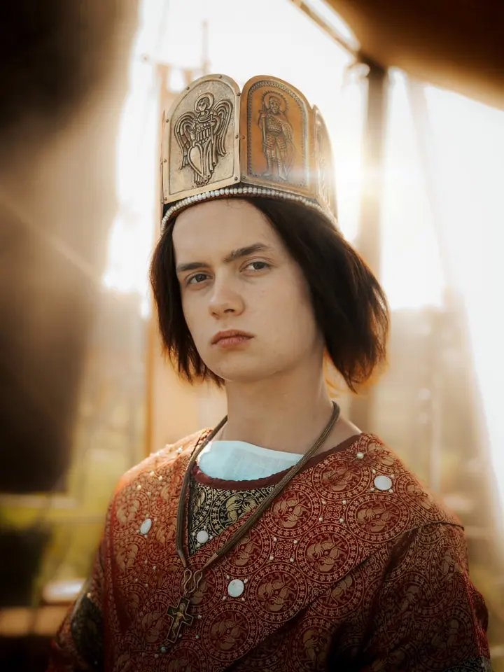
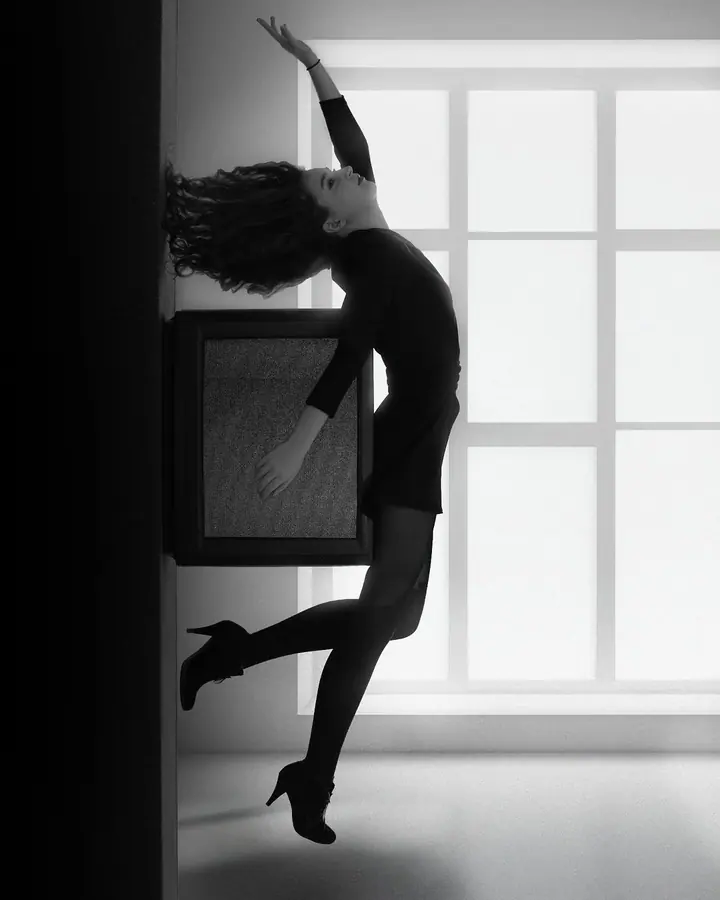

Portréty a lifestyle
Portrét, který stojí na světle a na člověku před objektivem. Fotím v ateliéru i venku, černobíle i barevně, podle toho, co k vám sedí.

Portrétní a reportážní fotograf
Jmenuji se Filip Jirásek a jsem fotograf a nadšenec do moderních technologií. Fotím portréty, reportáže z akcí a na cestách města, architekturu i krajinu.
Zeptat se na termín
Portrét, který stojí na světle a na člověku před objektivem. Fotím v ateliéru i venku, černobíle i barevně, podle toho, co k vám sedí.
Sháníte fotografa na akci? Přijdu, nebudu překážet a zachytím atmosféru i lidi, kteří ji tvoří.
Města, stavby a krajina tak, jak je vidím na cestách. Od mrakodrapů New Yorku po střechy Florencie.
Jmenuji se Filip Jirásek a fotografie je pro mě způsob, jak se dívat na svět pozorněji. Nejvíc mě baví portréty, ať už černobílé se silným kontrastem, nebo barevné v teplém protisvětle. Hledám v nich světlo, které člověka vykreslí, a výraz, který o něm něco řekne.
Kromě portrétů fotím akce a reportáže, cestovatelskou fotografii a architekturu. S foťákem jsem prošel ulice New Yorku i Florencie a rád se vracím k volné tvorbě, kde si hraji s pohybem a časem.
K fotografii mám blízko i přes technologie, které mě baví a sleduji je. Potřebujete vyfotit svůj portrét, nebo sháníte fotografa na akci? Napište mi, rád vám odpovím.
Pošlete mi e-mail, co potřebujete vyfotit, kdy a kde. Rád vám odpovím a doptám se na podrobnosti.
Probereme styl, místo a světlo. U portrétu si ujasníme, jestli spíš černobíle a kontrastně, nebo barevně a přirozeně.
Na portrétu vás povedu, abyste se před objektivem cítili dobře. Na akci se pohybuji nenápadně a fotím to, co se opravdu děje.
Z focení vyberu nejlepší snímky, upravím je a pošlu vám je v plném rozlišení.
Hlavně portréty a lifestyle, reportáže z akcí, cestovatelskou fotografii a architekturu. Věnuji se i volné fine art tvorbě.
Ne, za focením rád přijedu i jinam. Napište mi, kde a kdy potřebujete fotit, a domluvíme se.
Vůbec ne. U portrétu vás povedu, poradím s pózou i výrazem a hlídám světlo, abyste se nemuseli o nic starat.
Nejlépe e-mailem na filipjirasek@outlook.cz nebo přes formulář na tomto webu. Rád vám odpovím.